Truppgymnastik tävlingsresultatsappen
Detta är en liten, smidig webbapp för att presentera ett uppdaterat tävlingsresultat både på projektor och i smartphones, som android, iphones och windows phones. Webbappen är designad med minimala systemkrav och bör fungera för nästan vilken hemsida som helst *peppar*peppar*.
Hur den fungerar
Webbappen består av två delar.
Webbsida
Dels ett par filer som läggs på föreninges hemsida. Det går även bra att lägga dem någon annanstans. Det viktiga är alla som vill se resultatet får redan på länken.
Google Spreadsheet
Dels ett Google Spreadsheet eller om du så vill Google Calc. Tävlingsledningen fyller i Google Spreadsheet med tävlingsresultet. Webbappen kommer då att automatiskt uppdatera resultatet både i mobiltelefoner och till projektorn.
Konfigurera Google Spreadsheet, steg 1
- Börja med att logga in på ditt google konto, har du inget får du skapa ett.
- Öppna sedan detta kalkylarket https://docs.google.com/spreadsheet/ccc?key=0AsC6LcxWhNQOdHVwdXBIUXJoUks1Ukl2TTNHRmpBTWc#gid=0 i din webbläsare.
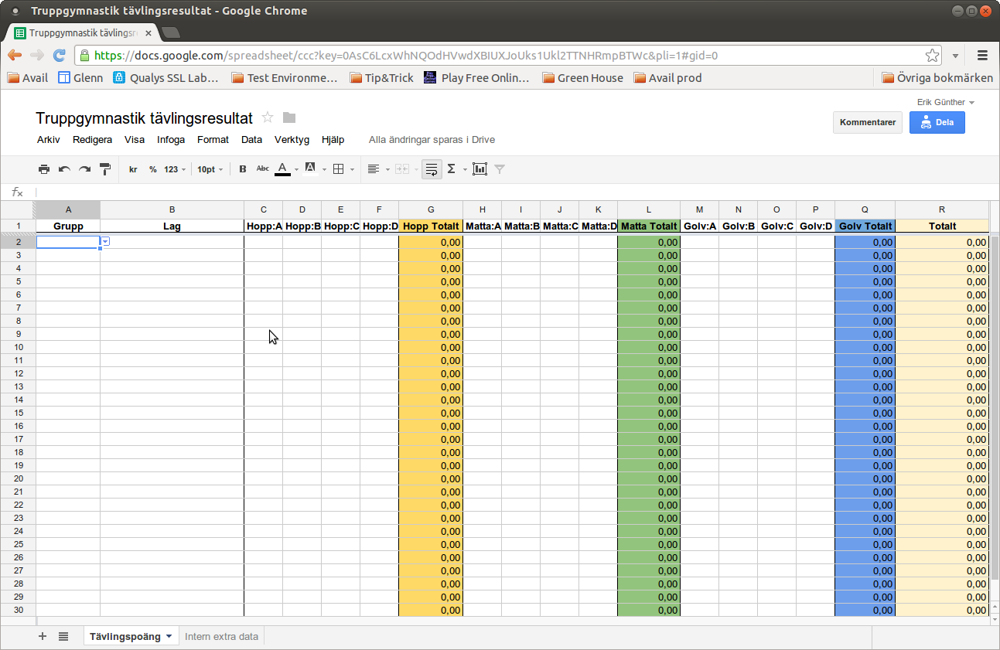
Konfigurera Google Spreadsheet, steg 2
- I Google Spreadsheet på webbsidan klicka på Arkiv och välj Kopiera...
- Fyll i ett namn på kalkylarket som du gillar
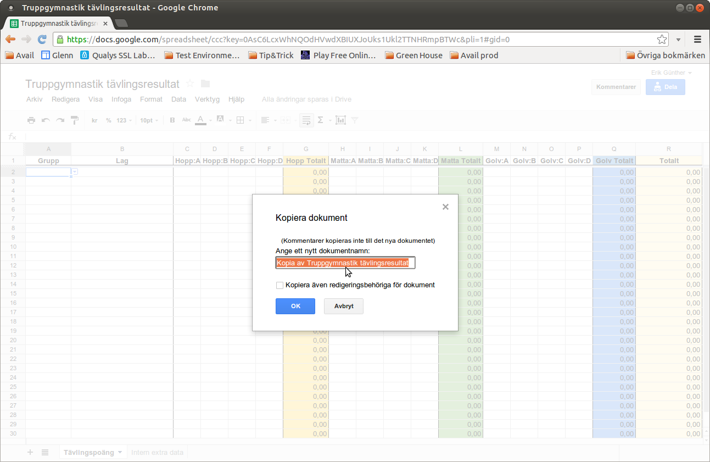
Konfigurera Google Spreadsheet, steg 3
- Fyll även i kryssrutan för "Kopiera även redigeringsbehörighet för dokumentet"
- Klicka sendan på OK
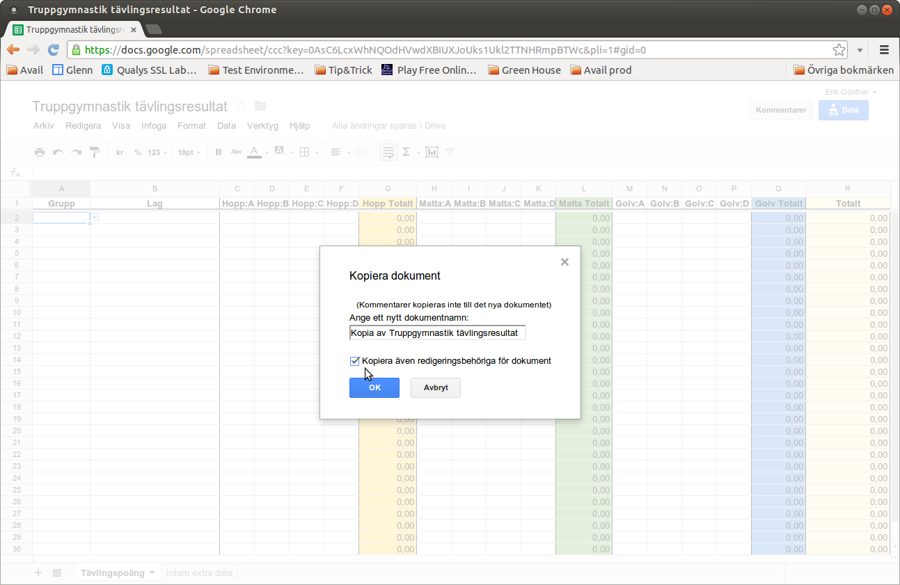
Konfigurera Google Spreadsheet, steg 4
- I det nya kalkylarket klicka på knappen Dela uppe till höger.
- Kontrollera att det står "Alla som får länken kan visa den"
- Lägg till andra som skall kunna redigera dokumentet. Du kan även senare lägga till andra som skall få visa/redigera kalkylarket.
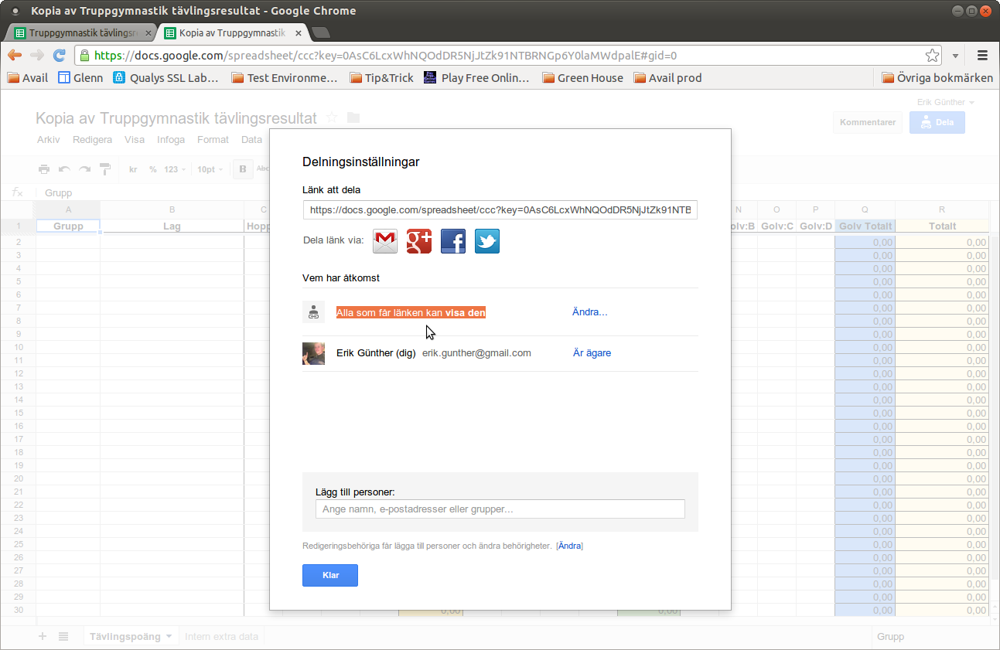
Konfigurera Google Spreadsheet, steg 5
- Lägg till andra som skall kunna redigera dokumentet. Du kan även senare lägga till andra som skall få visa/redigera kalkylarket.
- Klicka sedan på "Dela och Spara"
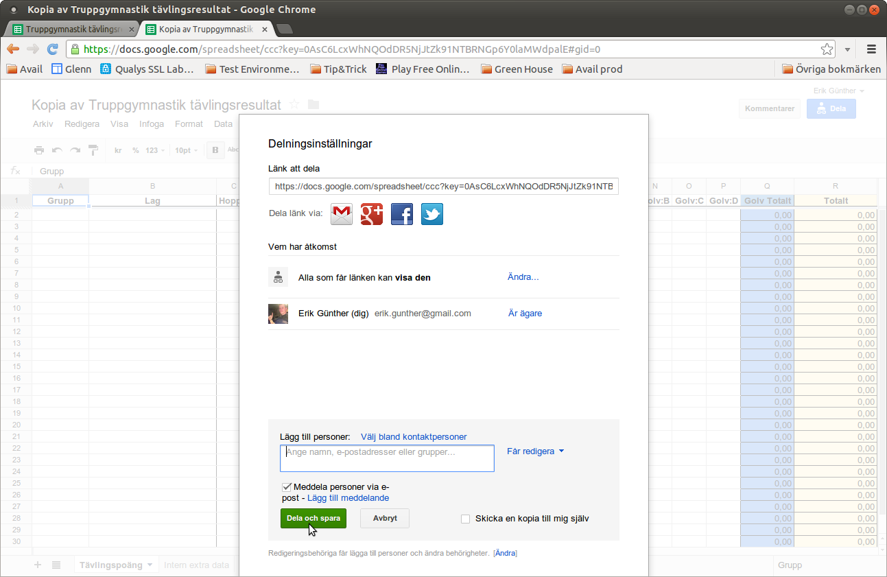
Konfigurera Google Spreadsheet, steg 6
- I det nya kalkyarket öppna Arkiv menyn och väl "Publicera på webben..."
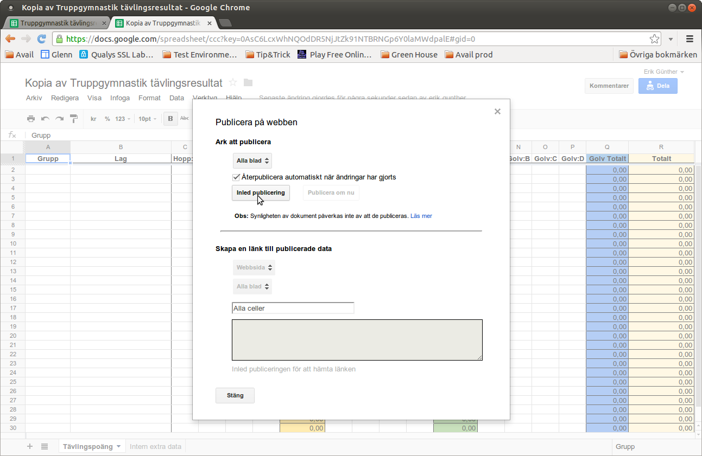
Konfigurera Google Spreadsheet, steg 7
- Klicka på "Inled publicering"
- Tryck sedan på "Stäng"
- Nu är konfigureringen av kalkylarket klart!
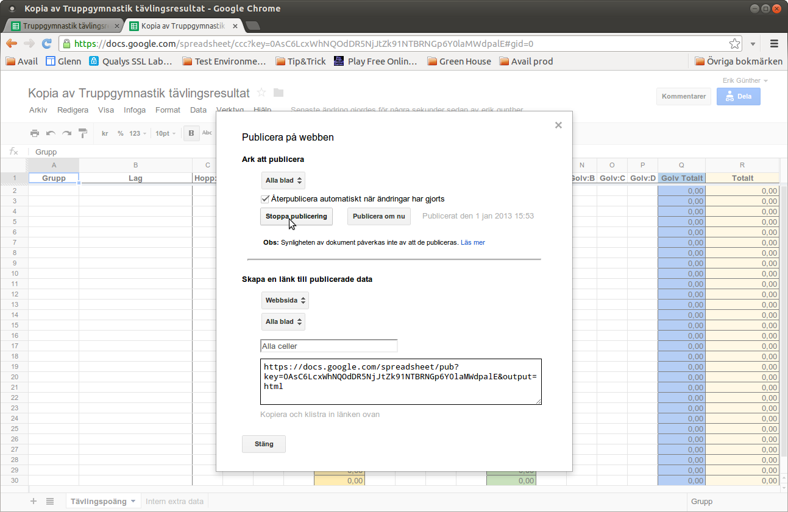
Konfigurera Webbappen, steg 1
- Öppna filen som heter index.html i en text editor så att du kan redigera html koden direkt. Använd inte Word eller andra ordbehandlare. Öppnar du med en html-editor se då till att du kan redigera javascript i den och att den INTE modifierar övrig kod på sidan. Det fungerar utmärkt med notepad.
- Ta bort den markerade koden efter google_calc_id=. Det som skall ändra är googles identiferare till det nya kalkyarket
Konfigurera Webbappen, steg 2
- Den nya koden som skall stoppas in hittar du i din webbläsare när du har det nya kalkyarket öppet.
- Öppna kalkylarket och kopiera den markerade delen ur länken tex:https://docs.google.com/spreadsheet/ccc?key=0AsC6LcxWhNQOdHVwdXBIUXJoUks1Ukl2TTNHRmpBTWc#gid=0 varken = eller # skall kopieras med.
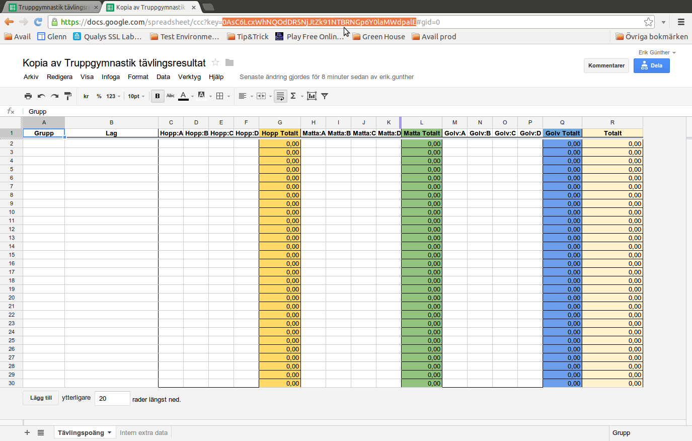
Konfigurera Webbappen, steg 3
- Ersätt med den nya koden i text editor.
- Spara och stäng editorn
- Nu är all konfigurering klar.
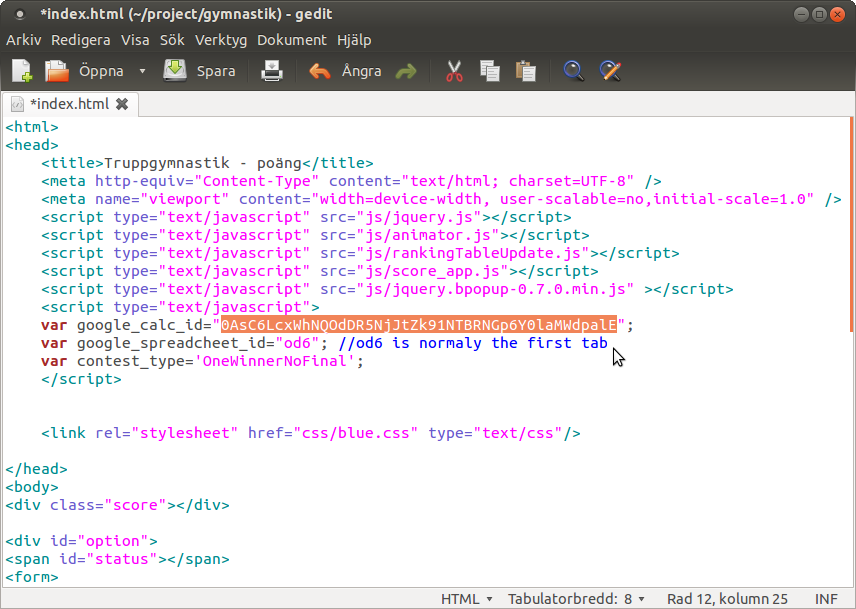
Filer att installera på webbserven
Enklast är att kopiera in alla filerna i denna katalogen till en katalog på webbserven. Har site:n ett CRM-system eller något annat sytem som genererar webbsidorna dynamiskt behöver man lägga dessa filerna så att webbserven skickar orörda (static files). Alla sökvägar i html-sidan är relativa vilket betyder att filerna i js/ och css/ katalogerna skall ligga direkt i samma katalog som html-filerna.
När det är klart
Om vi antar att vi lägger allt i en katalog som heter resultat på webbserven så blir det så här:
Då blir webbadressen ungefär som denna: http://gymnastikförening.se/resultat/index.html (byt gymnastikförening.se emot vad er föreninghemsida heter.)
Hur man använder systemet
I första kolumnen anger man vilken pool laget tillhör, man behöver inte ange poolerna i ordning, webbappen sorterar om dem rätt.
Kolumnen Grupp:
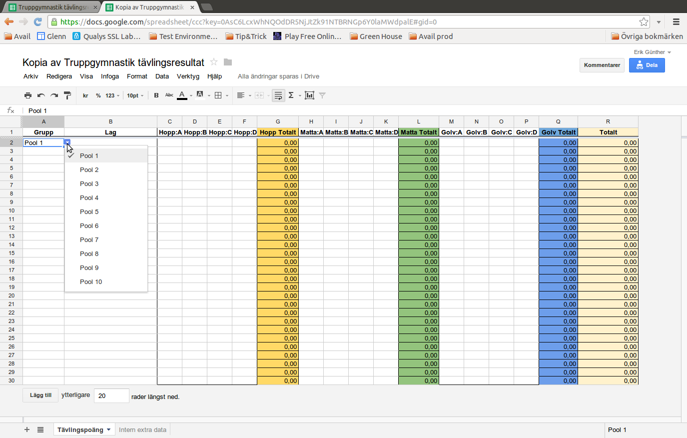
Hur man använder systemet
Webbappen kommer bara att visa de raderna som har ett lagnamn angivet om man ändrar lagnamnet kommer webbappen automatiskt att uppdatera namnet.
Begränsningar
Man får inte ändra rubrikerna, webbappen förväntar sig att de heter exakt som de gör. Om man ändrar namnen så kommer webbappen att sluta och fungera eller inte fungera som det är tänkt.
Har kallat de tre olika grenarna Hopp, Matta samt Golv. Valet av namn är flera
- Namnen är korta och tar med andra ord inte så stor plats på mobilen. Där är plats en brist om det skall vara tydligt
- Namnen är ungefär lika långa och gör att det blir snyggare layout
- Hopp kallas även Trampett
- Matta kallas även Tumbling
- Golv kallas även Fristående
Rubriken markerad:
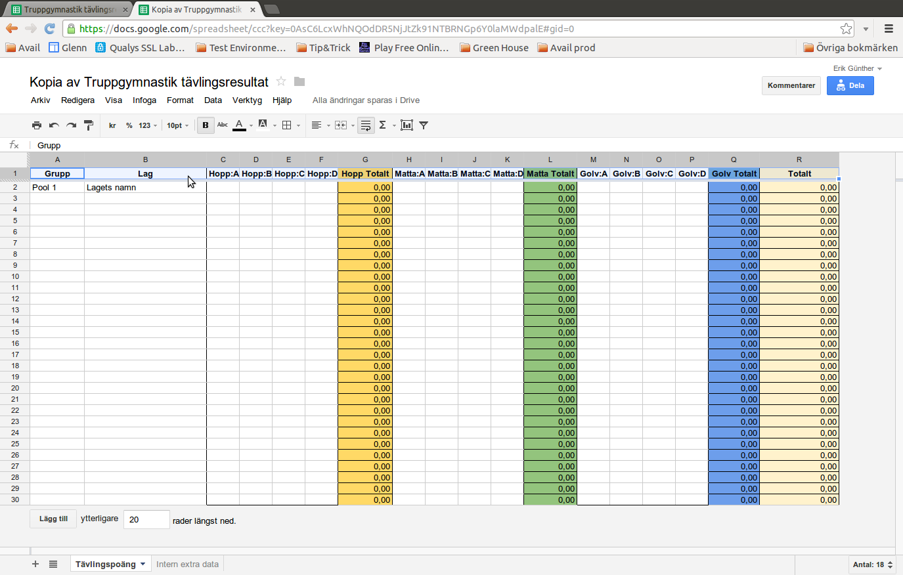
Begränsningar
Poäng kolumn D är ev. överdomarpoäng. Den bör i normalfallet vara 0.
Hopp Total, Matta Total och Golv Total skall summeras över respektive A, B, C och D poäng.
Totalt är summan av Hopp Total, Matta Total och Golv Total
Överdomarpoängen:
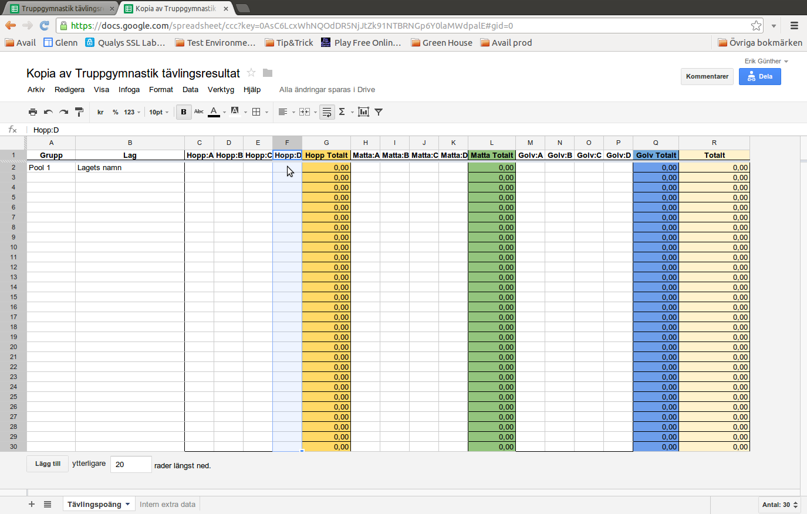
Webbappen
Webbappen kommer att automatiskt visa alla lag som har ett lagnamn. Den kommer regelbundet kontrollera om det kommit nya resultat och sortera om lagen i poängordning.
Du bör se ut ungefär så här:
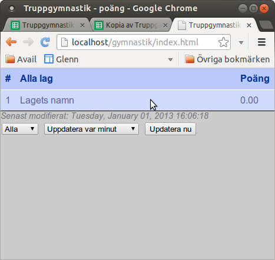
Webbappen
I normalläget visas bara total poängen men vill man se mer detaljerad poängvisning klickar man på lagnamnet och får reda på alla poäng för respektive gren.
Du bör se ut ungefär så här:
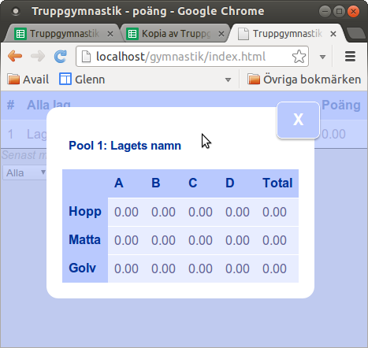
Webbappen
Finns det flera pooler så kan man välja om man bara vill se en pool eller alla lagen. Man kan bara välja bland de poolerna som det finns lag för i kalkylarket.
Du bör se ut ungefär så här:
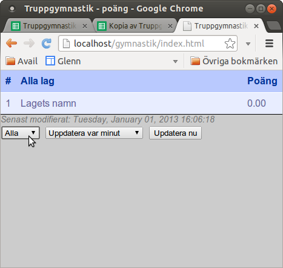
Webbappen
Man kan välja uppdateringsfrekven. Det man väljer är egentligen bara hur ofta webbappen skall kontrollera om det har hänt något i kalkyarket. Har det inte hänt något i kalkyldokumentet kommer inte heller webbappen göra någon uppdateringar.
Du bör se ut ungefär så här:
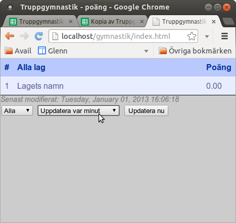
Webbappen
Är man stressad så kan man kontrollera om det hänt något nu! Åter igen är kalkylarket inte uppdaterat, händer inget.
Du bör se ut ungefär så här:
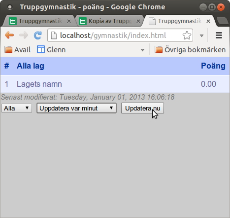
QR Kod
För att alla på tävling skall kunna komma åt webbappen så rekommenderar jag att generera en QR-kod med en länk till webbappen som ni har satt upp. En Google-sökning gav bland annat dessa som kan generera QR-koder:
Det finns många fler, välj en tryck upp massa affisher så att publiken kan få se resultatet.